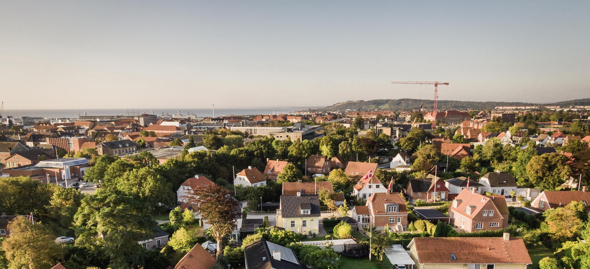

Schöckingen - Stadt Ditzingen
Tour
Feier
Kontakt
WILKOMMEN
BEI UNS
Dorf in der Stadt Ditzingen.
Berühmt für Waldspaziergänge
und den Martinshof, einen Reiterhof.
Komm mit und fühl dich wie zu Hause!
MEHR ERFAHREN
